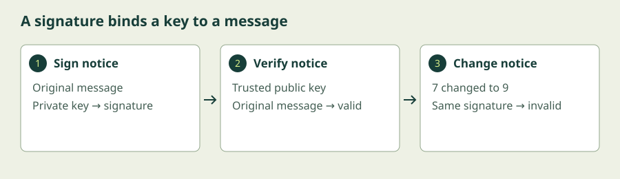
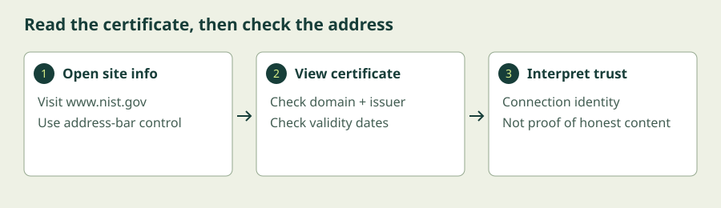

Cryptography in the Field
Follow a secure connection from identity checks to encrypted communication. Then create and verify a digital signature on a fictional announcement.
Begin the lesson ↓By the end, you can…
- Explain public and private keys, hybrid encryption, and key agreement.
- Distinguish digital signatures from encryption and shared-key authentication.
- Describe certificates and a simplified TLS 1.3 handshake.
- Verify a signature, detect a modified message, and inspect a website certificate.
Establish trust across the internet.
1. Two keys solve a distribution problem
Symmetric encryption is fast, but two strangers do not begin with a shared secret. Public-key cryptography uses related public and private keys. The private key stays protected; the public key can be distributed. The supported operation depends on the algorithm: some key pairs are for encryption, others for signatures or agreement. Do not assume a signing key can encrypt.
For public-key encryption, Alice encrypts to Bob’s public key and Bob decrypts with his private key. Alice still needs confidence that the public key belongs to Bob. Otherwise, an attacker could substitute their own public key. Public-key encryption is generally used as part of hybrid encryption: public-key techniques protect or establish a secret, and symmetric encryption protects the bulk data.
Key agreement, such as ephemeral Diffie–Hellman, lets two parties derive shared key material without transmitting the final secret itself. Agreement without authentication can be intercepted by an attacker acting as a separate partner to each side. Identity checks and the full protocol are essential.
2. A digital signature is not secrecy
A digital signature is produced using a private signing key over a message and verified using the corresponding public key. A valid signature binds that message to that key and detects modification. It does not hide the message, guarantee its truth, or automatically establish who owns the key. The verifier must trust the public key’s association with the intended signer.
Imagine the centre publishes a signed notice: “Class starts at 7.” Anyone with the trusted public key can check it. If someone changes 7 to 9, verification fails. If the centre itself signs incorrect information, verification can still succeed. Signature validity and factual accuracy are different questions.
A signature is not simply “encryption with the private key.” Algorithms such as ECDSA use distinct signing and verification operations. Signatures can support evidence and accountability, but legal non-repudiation also depends on identity verification, key custody, and procedures.
3. Certificates connect a public key to an identity
A certificate associates a public key with identifiers, such as a website domain, and is signed by an issuer. Browsers validate a chain leading to a trusted root, check the hostname and validity period, and apply other certificate-policy checks. A valid certificate for a lookalike domain does not make that domain the website you intended to visit.
HTTPS means HTTP carried over TLS. It protects the connection to the named endpoint. A scam site can use HTTPS; the connection can be securely encrypted to the wrong person. Check the address and context as well as the connection’s security status. Never bypass a certificate warning just to complete this course.
4. A simplified TLS 1.3 connection
First, the browser and server exchange supported settings and ephemeral key shares. They derive handshake secrets. The server sends its certificate and proves possession of the relevant private key by signing handshake data; the browser validates the certificate and proof. Both sides exchange Finished messages to confirm the handshake and derived secrets. Application data then travels using symmetric authenticated encryption.
This describes a typical certificate-authenticated TLS 1.3 flow, leaving out resumption and other variants. TLS 1.3 does not use the old RSA key-transport handshake. Ephemeral agreement enables forward secrecy: later theft of the server’s long-term signing key alone should not reveal previously captured sessions, assuming ephemeral secrets were discarded. Active compromise of an endpoint remains a serious problem.
Modern tools package these ideas: HTTPS for browsing, secure messaging for communication, signed software updates for distribution, and encrypted backups for stored data. Ask where encryption begins and ends, who controls keys, and how identities are checked. TLS typically ends at a server or proxy; it does not automatically encrypt the database or hide information from the service operator.
Another way into the ideas
Choose the written lesson or combine these visual explanations with the guided exercise. The videos cover selected concepts; use the short written explanations to fill the remaining objectives.
Cryptography: Crash Course Computer Science #33
Crash Course
Revisit the public-key and key-exchange explanation before following the TLS connection walkthrough.
Watch on YouTube if playback is blocked. Use YouTube’s captions where available; the written lesson provides a complete learning path.
Transport Layer Security (TLS)
Computerphile
A visual explanation of TLS. Protocol versions differ; use the TLS 1.3 flow above as the reference for this course. Complete the signature experiment to cover message verification.
Watch on YouTube if playback is blocked. Use YouTube’s captions where available; the written lesson provides a complete learning path.
Sign, verify, and question trust
Generate a temporary ECDSA P-256 key pair and sign a fictional notice in this browser. Then inspect a real certificate without changing any browser security settings.
Allow 20–30 minutes. Exercises reset when you reload or leave. They do not save progress or submit your entries.
- Leave the announcement as Class starts at 7. Click Sign announcement. The page creates a temporary ECDSA P-256 signing key pair and signs with SHA-256.
- Click Verify announcement. It should pass using the corresponding public key.
- Change 7 to 9 in the message without signing again. Click Verify announcement: it should fail. Restore the exact original text and verification should pass.
- In a separate tab, open https://www.nist.gov. Use the browser’s site-information control beside the address, then the connection or certificate details. Labels vary by browser. Check the subject/domain, issuer, and validity dates. Record what those fields establish, and what they do not.


Show the solution and troubleshooting
The unchanged message verifies. Altering any signed character, including punctuation or spaces, should fail; restoring the exact text should pass. Clicking Sign after editing intentionally creates a valid signature for the edited message, so use Verify to test tampering.
The lab trusts the public key it just generated. It does not independently establish a real person’s identity. The signature is encoded in Base64 for display, not encrypted.
A certificate’s domain identifiers must cover the hostname you visit. The issuer identifies the certificate signer, and the validity interval is one part of browser validation. Do not expect a particular issuer: certificates can change. If certificate details are unavailable on a mobile browser, use a desktop browser or explain the same checks using the illustration.
If signing is unavailable, use a current browser on HTTPS or localhost. Refreshing discards the key pair and signature.
Check your understanding
A valid signature verifies a notice that says the class is free. Does that prove the price is correct?
Compare your answer
No. It proves the message matches a signature produced with the corresponding private key, subject to the algorithm’s assumptions. Correctness and the signer’s identity require additional trust.
What to take with you
- Public-key methods help establish secrets and verify messages, with algorithm-specific roles.
- Signatures detect modification and bind messages to keys; they do not conceal information.
- Certificates help browsers connect keys to domain identities.
- TLS combines authentication, key agreement, and symmetric authenticated encryption.
Keep exploring
Independent educational material. External videos and resources belong to their creators; inclusion does not imply endorsement. References checked 6 October 2026.